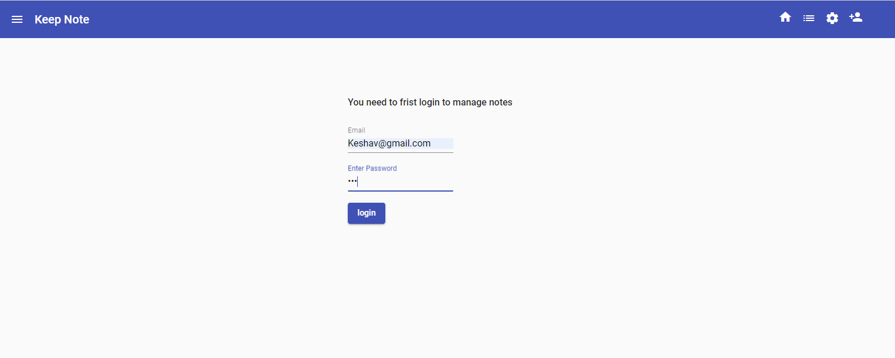
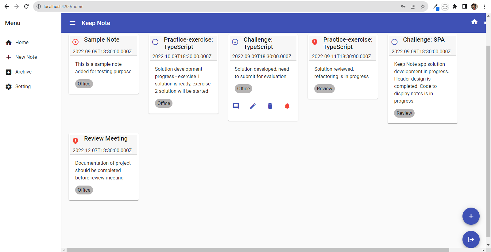
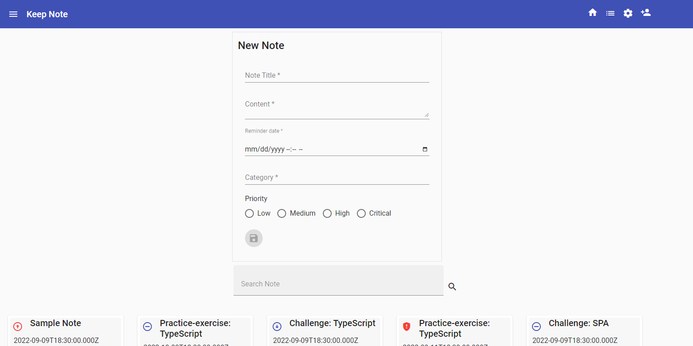
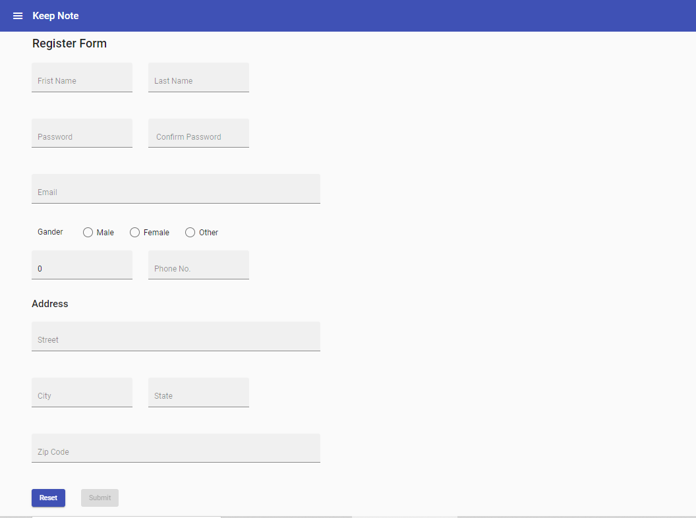

Working
Demo
Login Page
> The user should be fristly navigated to the login view after open this Keep Notes Application
> The view should request the user to enter the Email id and password.
> Upon successful validation, the user should be navigated to the home page.
Home Page
> The landing view of the app must display the cards of all notes.
> The data must be fetched using json-server.
> This view must be the default view.
> These card should be editable by the user.
> After click on edit button, the user should be navigated to the Edit view.
> The Home view must also allow users to search these card by their preference.
> Search allows user to search by title of the note.
> After click on delete button, the card will be deleted from the home page as well as from the json-server.
Edit View

> The user will be navigated to the edit view once he press the edit button on the landing view.
> The view should display the details of the card(note) selected.
> This view should also allow user to change the data of a selected card of a note.
> After adding the data to the card then user wants to save the data with the save button
> The app will request confirmation from the user to leave the view, if the user attempts to navigate away from this view without submitting the request.
Add Note Page
> On the home page there is present one section for add new notes. if he press the add notes button then open a new section for adding for new notes.
> The add new notes section must have Title, Content, date, category of the card which is entered by user.
> Upon successful entered details of the card, the user should be submit the card details by the submit button
> After submiting the new card details then this data save in json-server and show on Home page.
User Register Page
> This view will display all the user input details which is entered by the user.
> After inputing all the details from the user. this data will save on the json-server after press the submit button
> This form will be with proper validation and with correct details.